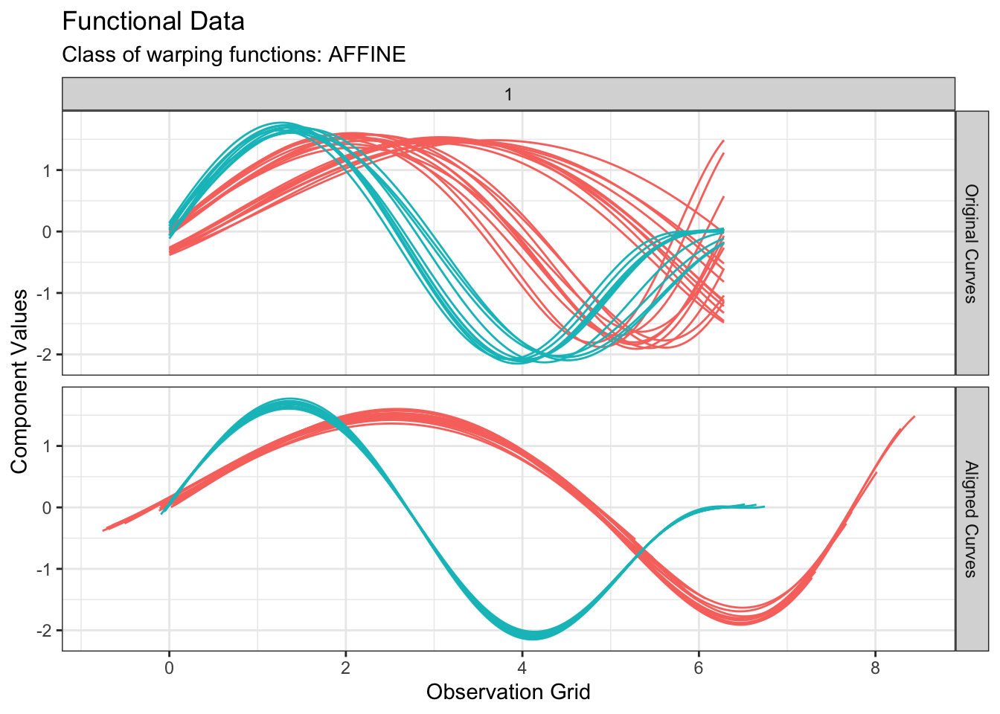
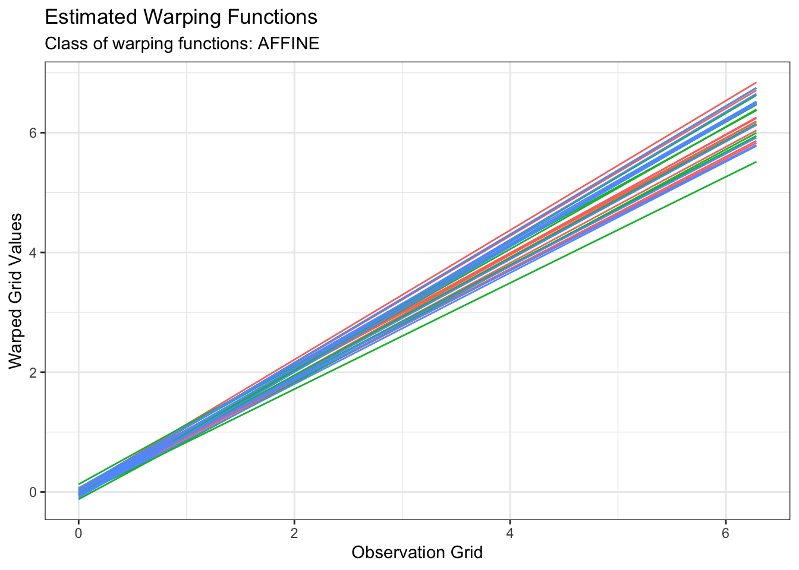

The fdacluster package provides implementations of the -means, hierarchical agglomerative and DBSCAN clustering methods for functional data. Variability in functional data is intrinsically divided into three components: amplitude, phase and ancillary variability. The first two sources of variability can be captured with a dedicated statistical analysis that integrates a curve alignment step. The -means and HAC algorithms implemented in fdacluster provide clustering structures that are based either on ampltitude variation (default behavior) or phase variation. This is achieved by jointly performing clustering and alignment of a functional data set. The three main related functions are fdakmeans() for the -means, fdahclust() for HAC and fdadbscan() for DBSCAN. The methods handle multivariate codomains.
Installation
You can install the official version from CRAN via:
install.packages("fdacluster")or you can opt to install the development version from GitHub with:
# install.packages("remotes")
remotes::install_github("astamm/fdacluster")Example
Data set
Let us consider the following simulated example of -dimensional curves: 
Looking at the data set, it seems that we shall expect groups if we aim at clustering based on phase variability but probably only groups if we search for a clustering structure based on amplitude variability.
-means based on amplitude variability
We can perform -means clustering based on amplitude variability as follows:
out1 <- fdakmeans(
simulated30$x,
simulated30$y,
seeds = c(1, 21),
n_clusters = 2,
centroid_type = "mean",
warping_class = "affine",
metric = "normalized_l2",
cluster_on_phase = FALSE
)All of fdakmeans(), fdahclust() and fdadbscan() functions returns an object of class caps (for Clustering with Amplitude and Phase Separation) for which S3 specialized methods of ggplot2::autoplot() and graphics::plot() have been implemented. Therefore, we can visualize the results simply with:
plot(out1, type = "amplitude")
plot(out1, type = "phase")
-means based on phase variability
We can perform -means clustering based on phase variability only by switch the cluster_on_phase argument to TRUE:
out2 <- fdakmeans(
simulated30$x,
simulated30$y,
seeds = c(1, 11, 21),
n_clusters = 3,
centroid_type = "mean",
warping_class = "affine",
metric = "normalized_l2",
cluster_on_phase = TRUE
)We can inspect the result:
plot(out2, type = "amplitude")
plot(out2, type = "phase")
We can perform similar analyses using HAC or DBSCAN instead of -means. The fdacluster package also provides visualization tools to help choosing the optimal number of cluster based on WSS and silhouette values. This can be achieved by using a combination of the functions compare_caps() and plot.mcaps().